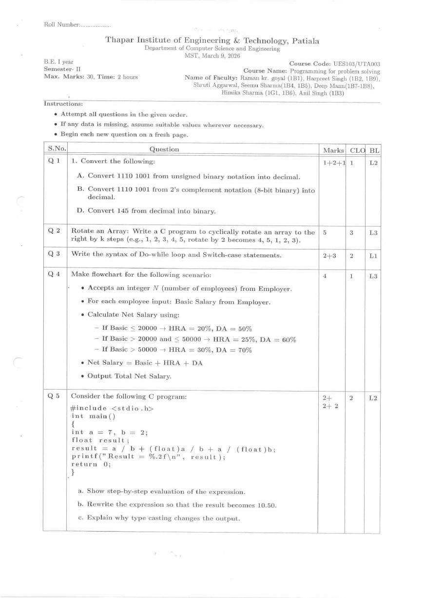
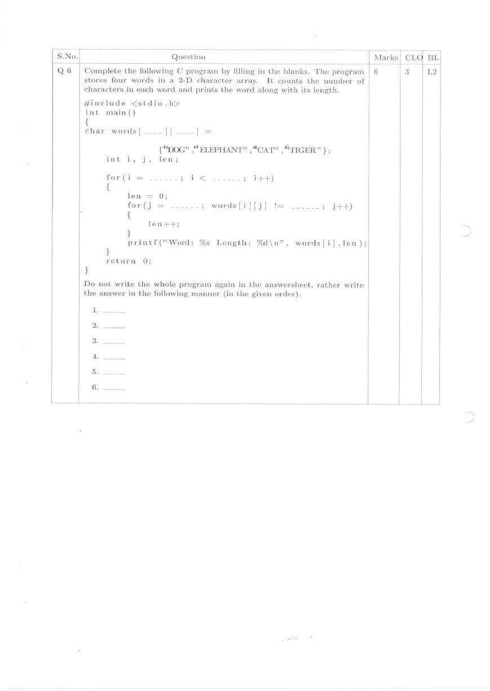
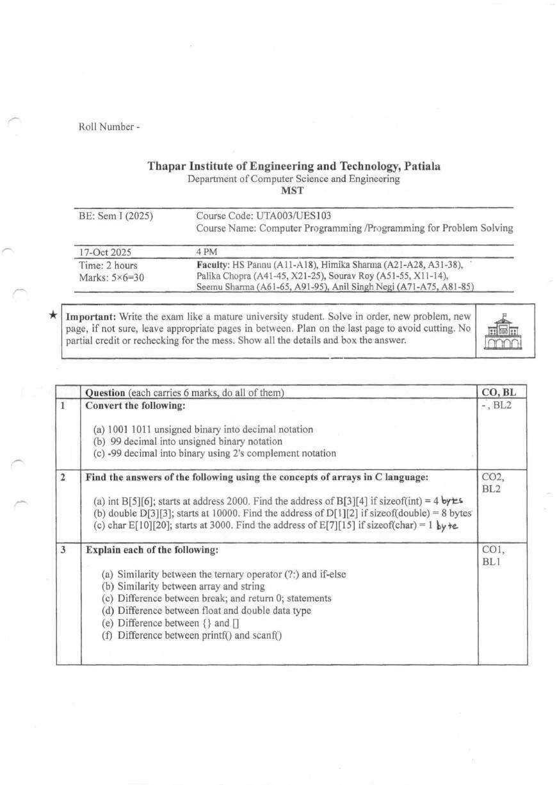
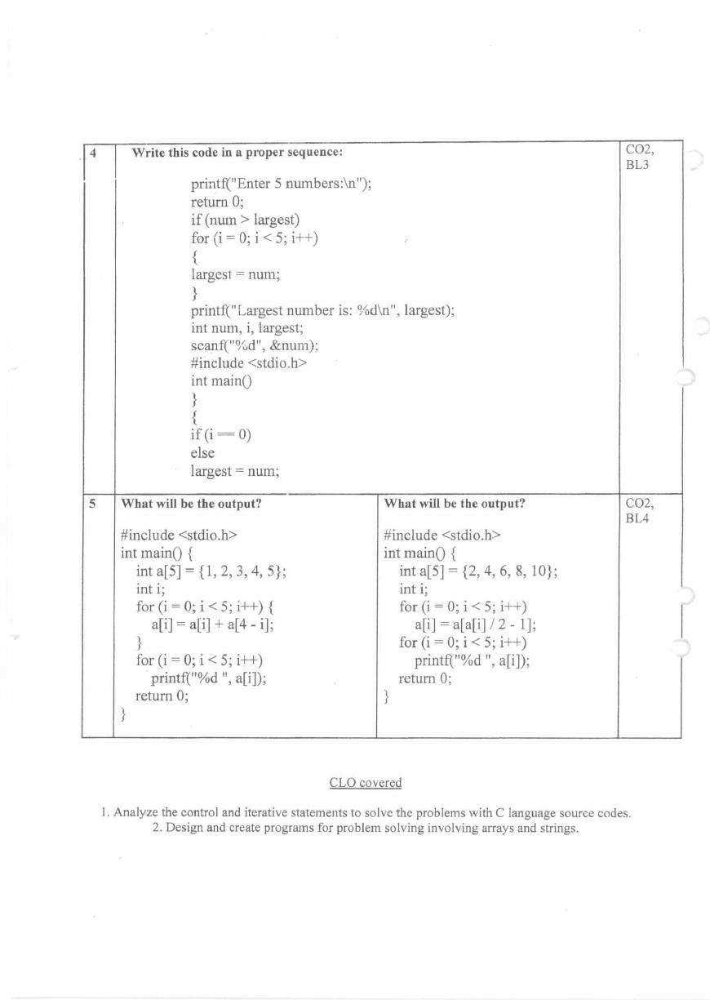
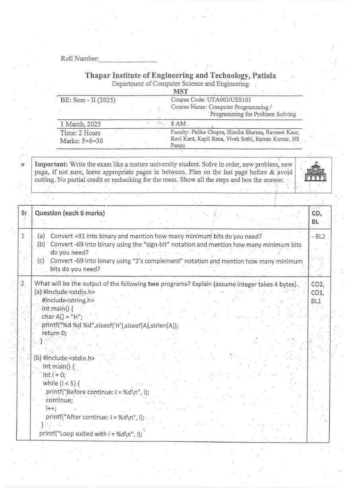
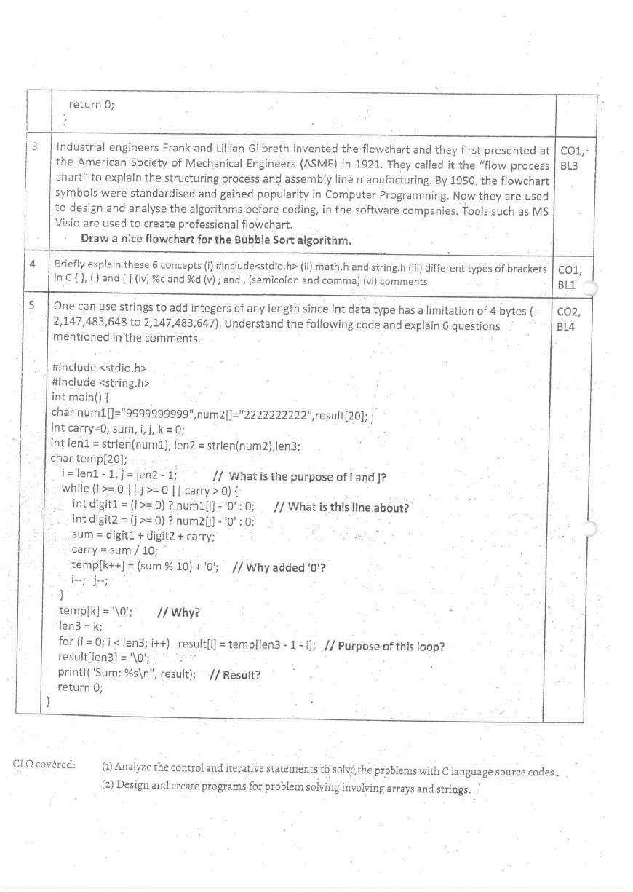
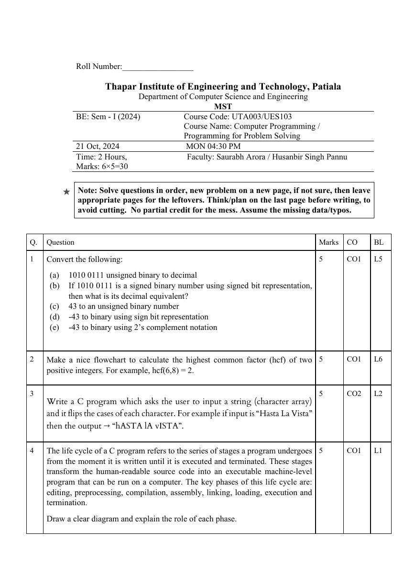
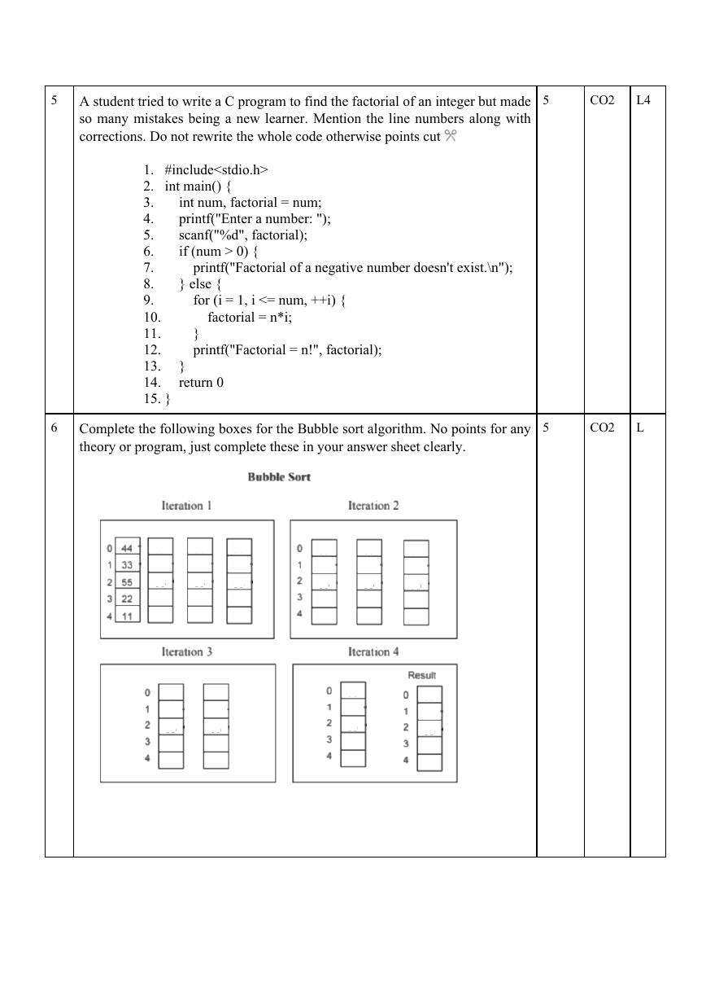
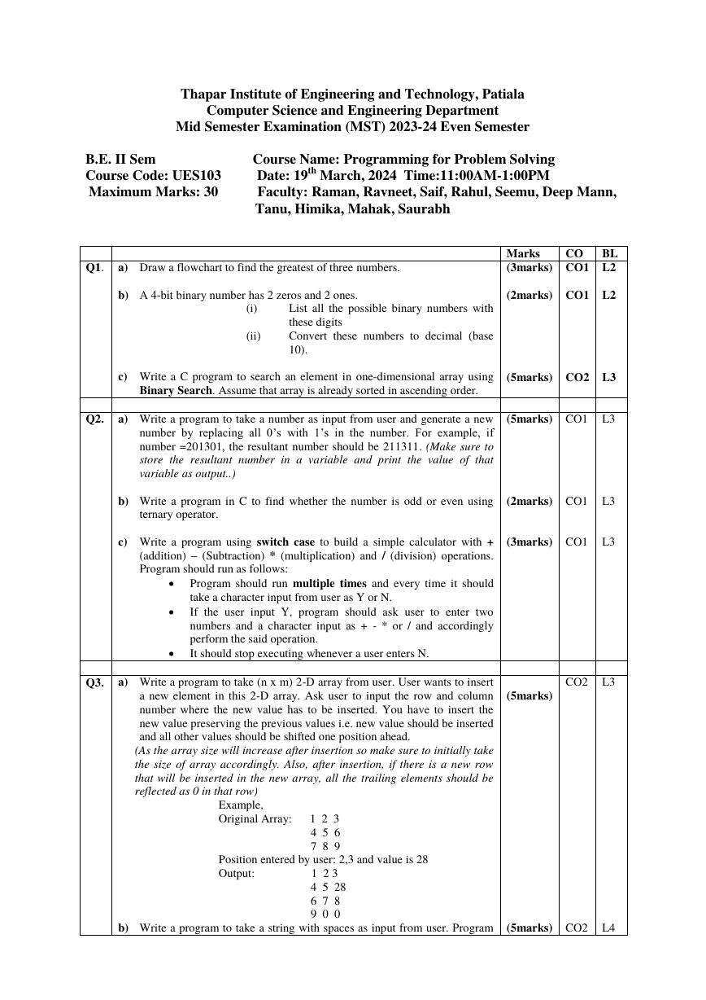
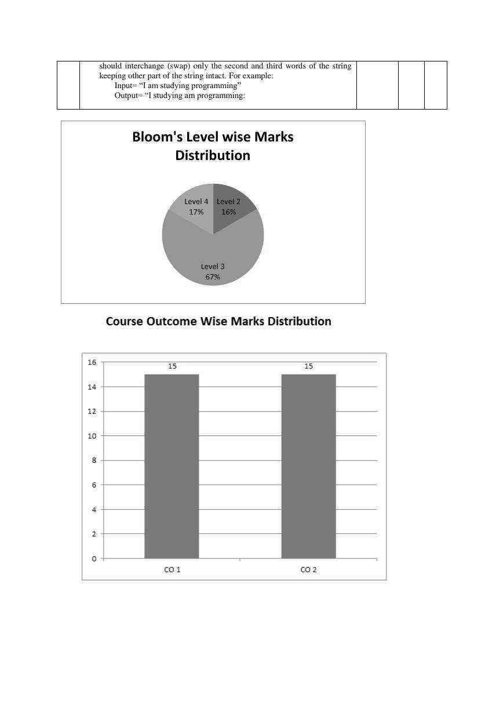

Built from five actual MST papers — March 2024, October 2024, March 2025, October 2025, and March 2026. Every number below is added up from the marks printed on those papers, and every code output was checked by running it.
Every topic worth preparing, ranked by how reliably it has come up across the five papers. "Chance" here comes only from how often each topic appeared in past MSTs — it is not a guarantee about this year's paper.
'\0', flip the case of each character, swap words, sizeof vs strlen, 2-D character arrays, and adding numbers stored as strings.continue vs break, digit-by-digit number manipulation, the ternary operator, a switch-case menu, and the syntax of do-while and switch.Every topic across all five papers at a glance. Each paper is out of 30.
| Topic | Mar 2024 /30 | Oct 2024 /30 | Mar 2025 /30 | Oct 2025 /30 | Mar 2026 /30 | Asked in |
|---|---|---|---|---|---|---|
| Number systems | 2 | 5 | 6 | 6 | 4 | 5/5 |
| Flowcharts | 3 | 5 | 6 | — | 4 | 4/5 |
| Arrays (1-D & 2-D) | 5 | — | — | 12 | 5 | 3/5 |
| Searching & sorting | 5 | 5 | — | — | — | 2/5 |
| Strings | 5 | 5 | 9 | — | 6 | 4/5 |
| Loops, conditions & switch | 10 | — | 3 | 6 | 5 | 4/5 |
| C basics, operators & type casting | — | 5 | 6 | 6 | 6 | 4/5 |
| Debugging | — | 5 | — | — | — | 1/5 |
All five papers as original scans, so every line of code is exactly as printed. Newest first. Try one as a timed 2-hour mock before looking at the analysis.
UES103/UTA003: Programming for Problem Solving · 30 marks · 2 hours


UTA003/UES103: Computer Programming / Programming for Problem Solving · 30 marks · 2 hours


UTA003/UES103: Computer Programming / Programming for Problem Solving · 30 marks · 2 hours


UTA003/UES103: Computer Programming / Programming for Problem Solving · 30 marks · 2 hours


UES103: Programming for Problem Solving · 30 marks · 2 hours


One payment for C Programming (UES103) — it stays open on your Thapar account.
All 5 past papers solved, every part, step by step — written the way you would put it in the answer sheet, with the method named at each step. 30 questions in total.
Why this part costs money: this part took weeks — reading every past paper, counting the marks by hand, and solving every question. Running the site costs money too. Everything above stays free for everyone, always.
This guide is made by a student, for students — free, no ads, and built by reading every past paper by hand. If it genuinely helps you, please take five seconds to vote and leave a line about what worked or what's missing. Your answer goes only to the student who made it, and it decides which subjects and guides get built next.